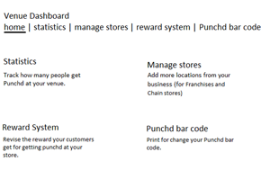
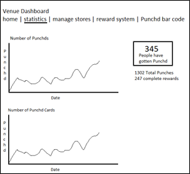
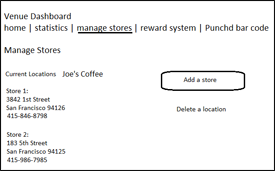
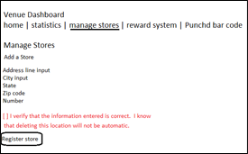
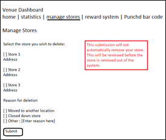
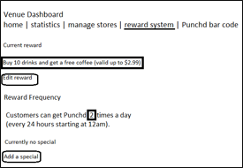
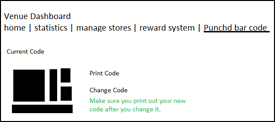

Wireframe Mockups for Punchd
Venue Deals Management
Some wireframes I made to map out how the Venue Owner's dashboard should look like to manage and track their store's Punchd deals. 






© 2011 Site Design and Coding done by Carmen J. Yuen